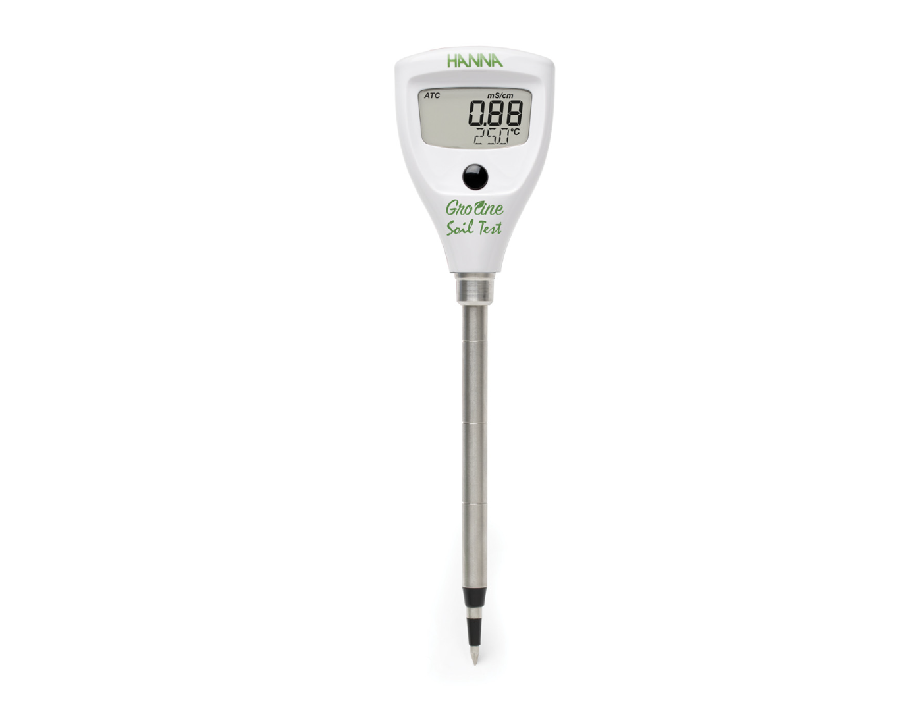

HY_DRO
Soil–Meter
Descriptions
@Sahil
5-months ago
The analog models like the MosserLee SoilMaster Analog Moisture/Light/PH Meter and
the Bond 3-Way SoilMeter are praised for ease of use and no batteries required.
@Lok
2-weeks ago
They’re especially helpful for new gardeners or when you just want a quick gauge of
soil moisture rather than lab-precision.
@Maya
1-month ago
I like how simple it is to read the moisture levels. It helped me figure out
which plants were getting too much water — totally worth it for beginners.
@Rohan
3-weeks ago
Works well for my small indoor garden. Not super advanced but reliable for
day-to-day checking before watering.
@Emily
6-days ago
The readings are pretty accurate compared to my digital tester. A great
low-maintenance option since it doesn’t require batteries.
@Carlos
10-days ago
Good for quick checks, especially outdoors. It struggled a bit in very dry
soil but overall a useful and affordable tool.